Drone Statics
INTRODUCTION
WHAT IS A DRONE?
- It is basically an UAV (Unmanned Aerial Vehicle).
- It is controlled by a ground-based controller which may be human operated (RPA) or autonomous.
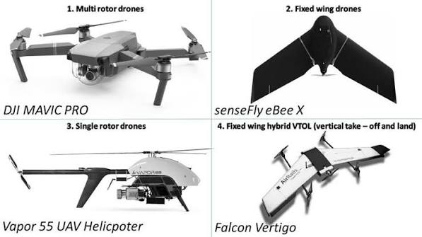
PARTS OF A DRONE
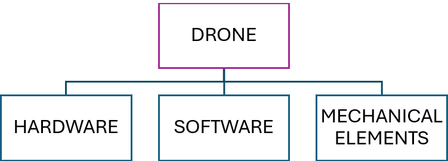
HARDWARE
- Basically, a PCBA (Printed Circuit Board Assembly) contains SoC (System on Chip).
- The SoC is the brain of the drone. It is like a mini computer.
- The idea of SoC is to save space and reduce weight.
- It integrates most essential computing components into a single silicon chip.
SOFTWARE
- Firmware Components
- Operating System and Drivers
- Sensing, Navigation and Control
- Application Specific Components
MECHANICAL
- Frame
- Motors
- Propellers
- Landing Gear
- Battery
STATICS INTRODUCTION
- The static analysis of a drone is a fundamental aspect of its mechanical design and stability assessment. Statics deals with the study of forces and moments acting on a body in equilibrium, where the net force and net moment are equal to zero. In the context of a quadcopter, static analysis helps determine how the drone maintains balance during stationary conditions such as hovering, landing, and pre-flight operation.
- A drone is subjected to various forces, including gravitational force (weight), thrust generated by the propellers, and reaction forces acting on its structure. The proper distribution of these forces is essential to ensure stable operation, efficient power utilization, and structural integrity. Any imbalance in force or moment distribution can lead to unwanted roll, pitch, or yaw behavior, affecting flight performance and control.
- This documentation is regarding the static analysis of the drone by examining its physical configuration, mass distribution, center of gravity, force equilibrium, and moment equilibrium. The analysis shows how the thrust generated by the propulsion system balances the weight of the drone and how the placement of components influences overall stability.
- The objective of this analysis is to verify that the drone satisfies the principles of static equilibrium and possesses a balanced structural design capable of supporting safe and stable flight operations.
BASIC FLIGHT CONDITIONS
- Hovering: Hovering occurs when the total upward thrust produced by the four propellers is equal to the weight of the quadcopter.
\[
T = W
\]
where:
\[ (T) = \text{Total thrust generated by the propellers} \] \[ (W) = \text{Weight of the quadcopter} \] Under this condition, the quadcopter remains stationary in the air with no vertical acceleration. Hovering represents a state of static equilibrium and is one of the most important operating conditions for analysis. - Takeoff or Climb: A quadcopter rises when the total thrust generated by its motors exceeds its weight. \[ T > W \] The excess thrust creates an upward net force, causing positive vertical acceleration and increasing altitude.
- Descent or Landing: A quadcopter descends when the total thrust becomes less than its weight. \[ T < W \] The resulting downward net force causes the quadcopter to lose altitude. Controlled reduction of thrust allows a safe and stable landing.
- Forward Flight: When a quadcopter pitches forward, a component of the thrust acts in the forward direction. During forward motion, aerodynamic drag acts opposite to the direction of travel. \[ D = \text{Aerodynamic Drag} \] where: \[ (D) = \text{Drag force opposing motion} \] For steady forward flight, the forward component of thrust balances the drag.
FORCE DIAGRAM
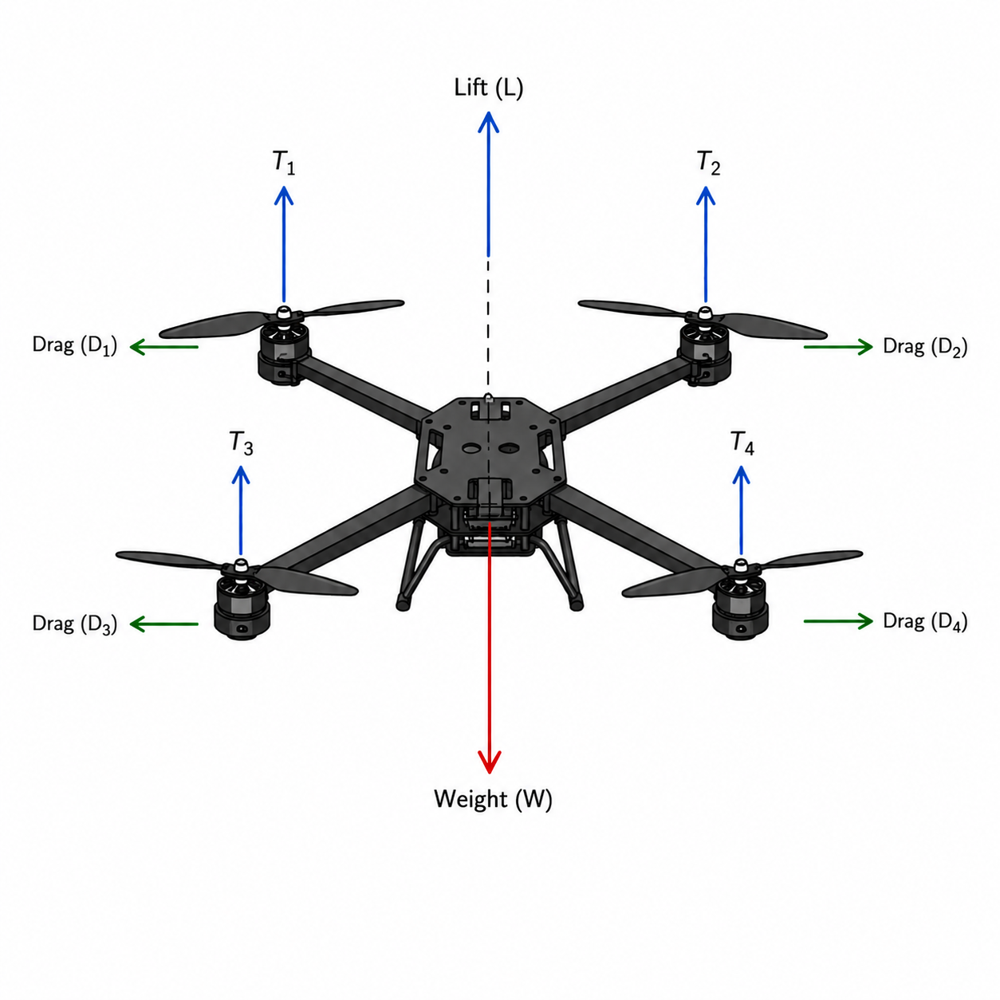
ROLL, PITCH, AND YAW
- Roll: Roll is rotation about the longitudinal axis. It is controlled by varying the thrust of the motors on either side of the drone.
- Pitch: Pitch is the rotation around the lateral axis. It is controlled by adjusting the thrust of the front and rear motors.
- Yaw: Yaw is the rotation around the vertical axis. It is controlled by creating a torque that causes the drone to rotate left or right.
REFERENCE AXES AND ROTATION
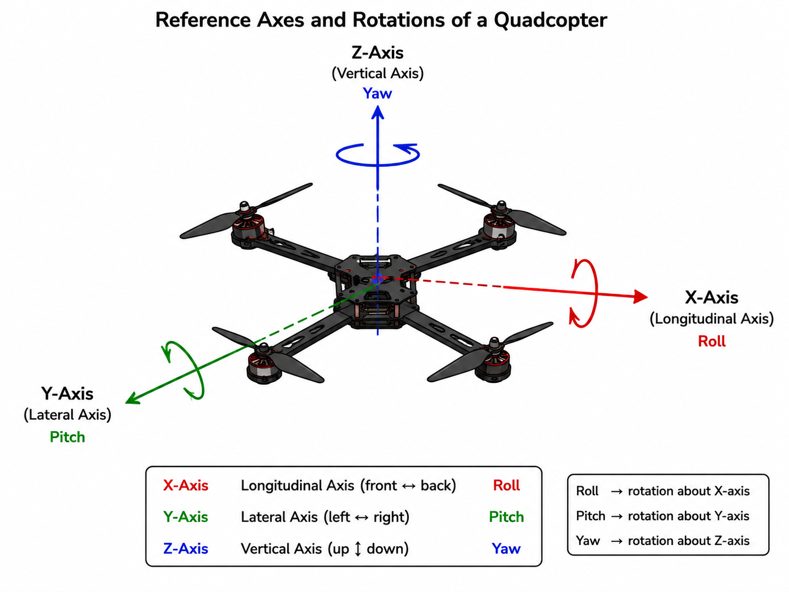
DRONE FRAME
- The frame supports all structural and electronic components, influences stability, weight, durability, vibration characteristics, and payload capability.
- Frame selection depends on weight, strength, size, material, and mission requirements.
- It is the base of the drone structure providing proper support, maintaining its geometry and also helps in isolating the vibrations caused by the motor movements.
- Usually, carbon fiber is the material used for the frame, but plastic is also an alternative to it.
Types of Equilibrium
- Static equilibrium is when all the side forces are 0 and the summation of moments at the center of gravity is also 0.
- In Stable static equilibrium, if the object is disturbed from its equilibrium position, then it goes back to the same position no matter what.
- In Unstable static equilibrium, if the object is disturbed from its equilibrium position, then it will never come back to the same position.
- In Neutral static equilibrium, the object remains in equilibrium state always even if its position is changed slightly.
- A special case of stable equilibrium is when the object, until a certain threshold disturbance, manages to go back to its original position.
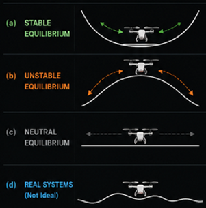
TRIMMED CONDITION
- A trimmed flight condition exists when net forces and net moments are zero and the quadcopter maintains its flight state without acceleration or rotation.
- In a dynamic context, the drone can fly without having to overcome any disturbances. \[ \sum F=0,\quad \sum M=0 \]
ANGLE OF ATTACK AND PITCH ANGLE
The pitch angle is the angle between the drone's longitudinal axis and the horizontal plane, whereas the angle of attack is the angle between the drone's longitudinal axis and the relative airflow. These angles are equal only when the flight path is parallel to the horizon. During climbs, descents, or maneuvering flight, the angle of attack and pitch angle generally differ. In the diagram for Angle of Attack, the horizontal line is referred as relative wind direction while in the Pitch Angle diagram, the horizontal is referred as the horizontal plane.
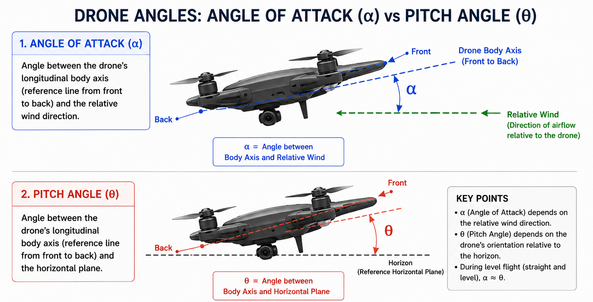
PAYLOAD
- Payload capacity is the maximum additional mass that can be carried while maintaining safe and stable flight.
- It depends on available thrust, frame strength, battery capacity, and propulsion efficiency.
- Payload includes cameras, sensors, COM modules, additional batteries, etc.
- Payload has a direct influence in the flight time, stability, structural loading and control performance of the drone. The formula for payload capacity is: \[ \text{Payload Capacity} = \text{T} - \text{Drone Empty Weight} \] \[ \text{Payload Capacity} = (T \times M \times H) - W \] where: \[ \begin{aligned} T &= \text{Total thrust generated by the propellers} \\ M &= \text{Number of motors} \\ H &= \text{Hover throttle percentage} \\ W &= \text{Weight of the drone with battery} \end{aligned} \]
HARDWARE ANALYSIS OF A DRONE
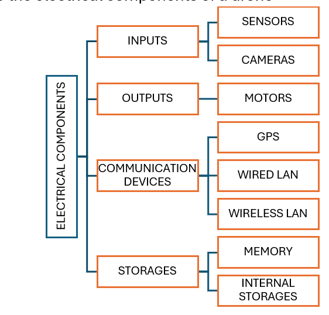
SENSORS IN DRONES
- Gyroscope
- Barometer
- Accelerometer
- GPS
- Magnetometer
- Rangefinder
- IMU
- Obstacle Avoidance Sensors
- Ultrasonic Distance Sensors
- Time-of-Flight (ToF) Sensors
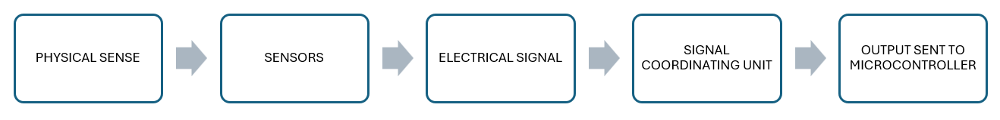
1. Gyroscope
What is a Gyroscope?
A gyroscope measures the angular velocity of a drone. It detects how fast the drone rotates around its three axes:
- Roll
- Pitch
- Yaw
Working Principle
Modern MEMS gyroscopes contain vibrating structures.
When the drone rotates:
- Coriolis forces act on the vibrating element
- Motion changes are detected
- Electrical signals are generated
- Rotation rate is calculated
Role in Drone Swarms
The gyroscope:
- Maintains stability
- Detects unwanted rotations
- Assists PID controllers
Advantages
- Fast response
- High accuracy
- Essential for flight stabilization
2. Accelerometer
What is an Accelerometer?
An accelerometer measures linear acceleration along:
- X-axis
- Y-axis
- Z-axis
Working Principle
Most accelerometers use piezoelectric materials.
When acceleration occurs:
- Internal structures deform
- Electrical charge is generated
- Acceleration is measured
Role in Drones
Used for:
- Motion detection
- Hover stabilization
- Position estimation
Advantages
- Lightweight
- Low power consumption
- Works with gyroscope
3. Barometer
What is a Barometer?
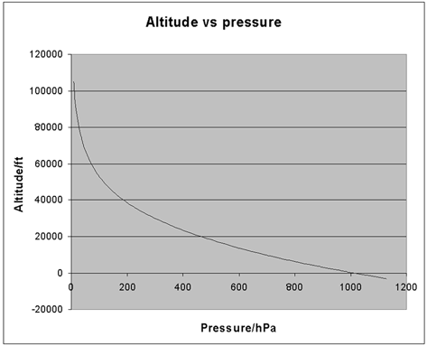
A barometer measures atmospheric pressure.
Working Principle
Air pressure decreases with altitude.
By measuring pressure:
- Positive (Stable) Pitch Stability: When the angle of attack increases, a restoring moment is automatically formed and thus the drone returns to its original altitude.
- Neutral Pitch Stability: The change in the altitude is maintained and there is no coming back to the original state.
- Pitch Instability: This is a state of instability because the increase in the altitude caused by the disturbance, just keeps on increasing without regaining its original state.
4. GPS
What is GPS?
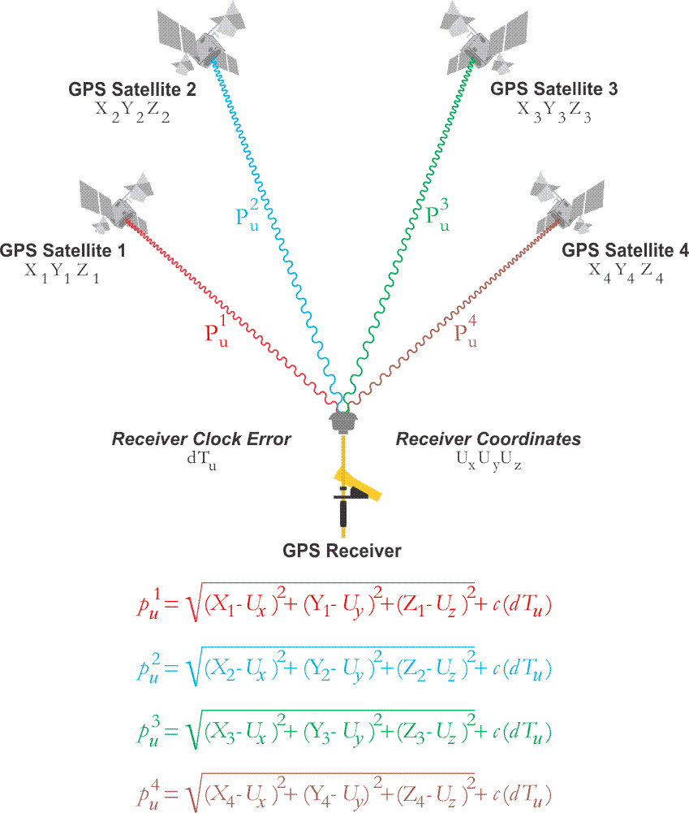
Global Positioning System helps determine geographical location.
Working Principle
GPS receivers receive signals from multiple satellites.
Using triangulation:
- Latitude
- Longitude
- Altitude
are calculated.
Role in Drone Swarms
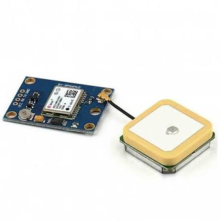
- Autonomous navigation
- Waypoint missions
- Return-to-home
Limitations
- Weak indoors
- Affected by obstacles